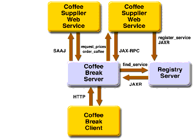

The Coffee Break Application
This chapter describes the Coffee Break application, a set of web applications that demonstrate how to use several of the Java Web services APIs together. The Coffee Break sells coffee on the Internet. Customers communicate with the Coffee Break server to order coffee online. There are two versions of the Coffee Break server that you can run: One version consists of Java servlets, JSP pages, and JavaBeans components; the second version uses JavaServer Faces technology as well as Java servlets, JSP pages, and JavaBeans components. Using either version, a customer enters the quantity of each coffee to order and clicks the Submit button to send the order.
The Coffee Break does not maintain any inventory. It handles customer and order management and billing. Each order is filled by forwarding suborders to one or more coffee suppliers. This process is depicted in Figure 35-1.

Figure 35-1 Coffee Break Application Flow
Both versions of the Coffee Break server obtain the coffee varieties and their prices by querying suppliers at startup and on demand.
- The Coffee Break servers use SAAJ messaging to communicate with one of the suppliers. The Coffee Break has been dealing with this supplier for some time and has previously made the necessary arrangements for doing request-response SAAJ messaging. The two parties have agreed to exchange four kinds of XML messages and have set up the DTDs those messages will follow.
- The Coffee Break servers use JAXR to send a query searching for coffee suppliers that support JAX-RPC to a registry server.
- The Coffee Break servers request price lists from each of the coffee suppliers. The servers make the appropriate remote procedure calls and wait for the response, which is a JavaBeans component representing a price list. The SAAJ supplier returns price lists as XML documents.
- Upon receiving the responses, the Coffee Break servers process the price lists from the JavaBeans components returned by calls to the suppliers.
- The Coffee Break servers create a local database of suppliers.
- When an order is placed, suborders are sent to one or more suppliers using the supplier's preferred protocol.
All of the material in The J2EE(TM) 1.4 Tutorial is copyright-protected and may not be published in other works without express written permission from Sun Microsystems.